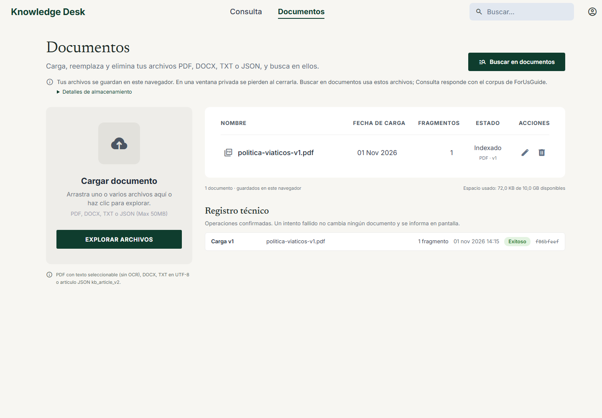
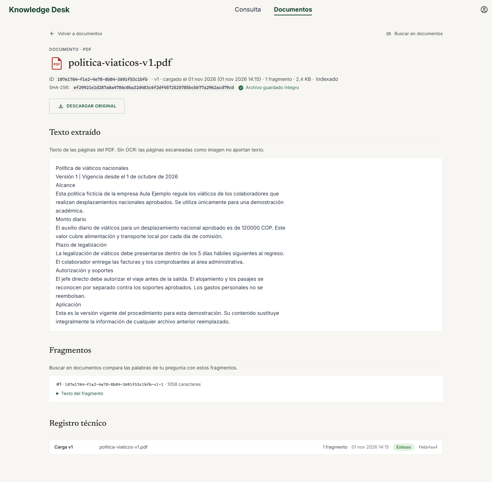
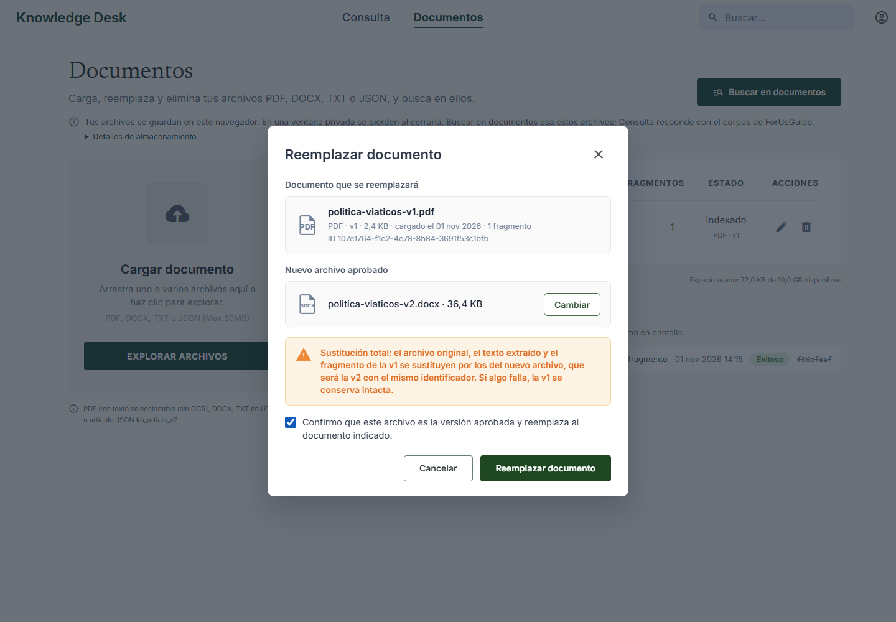
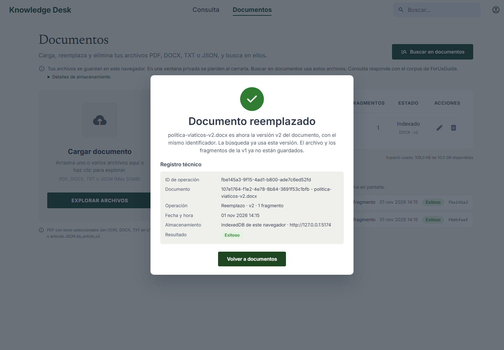
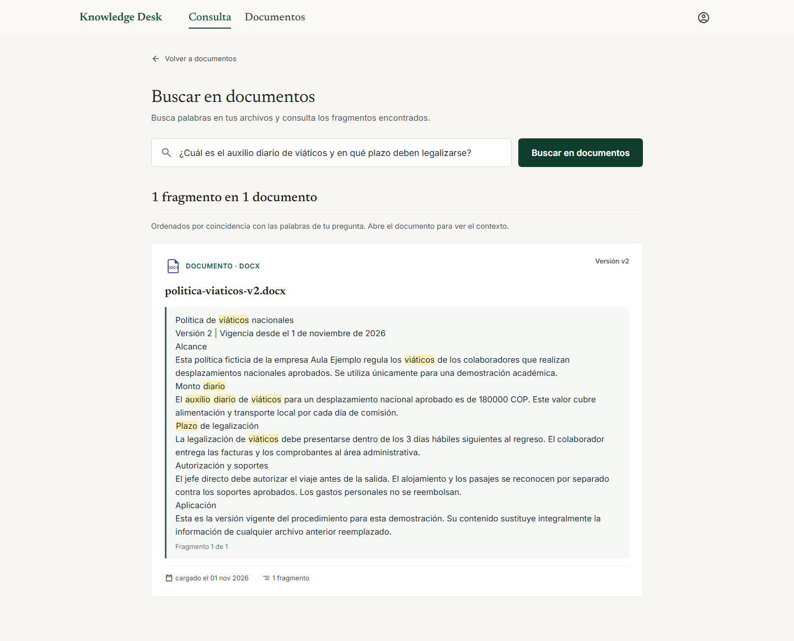
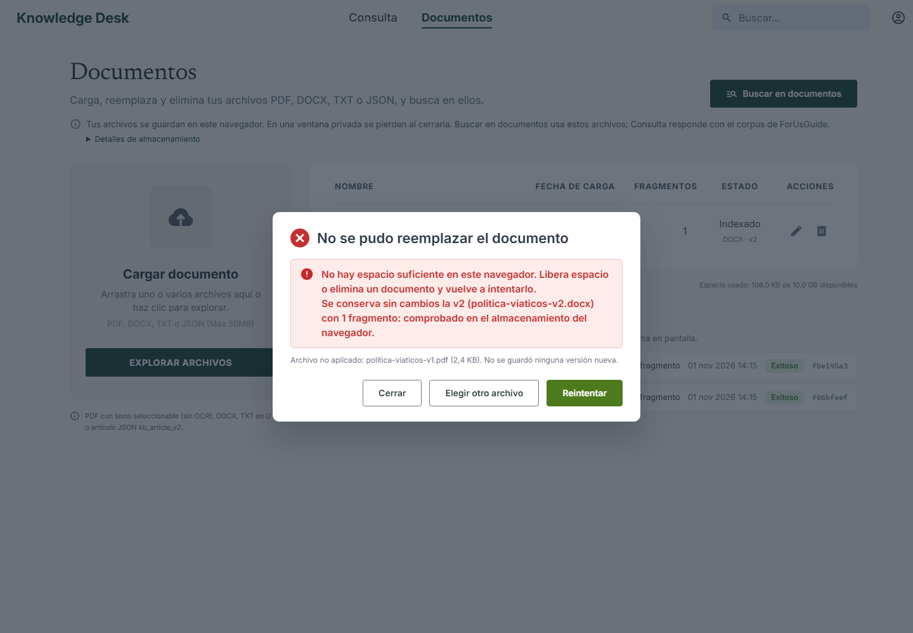
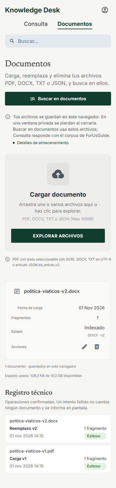
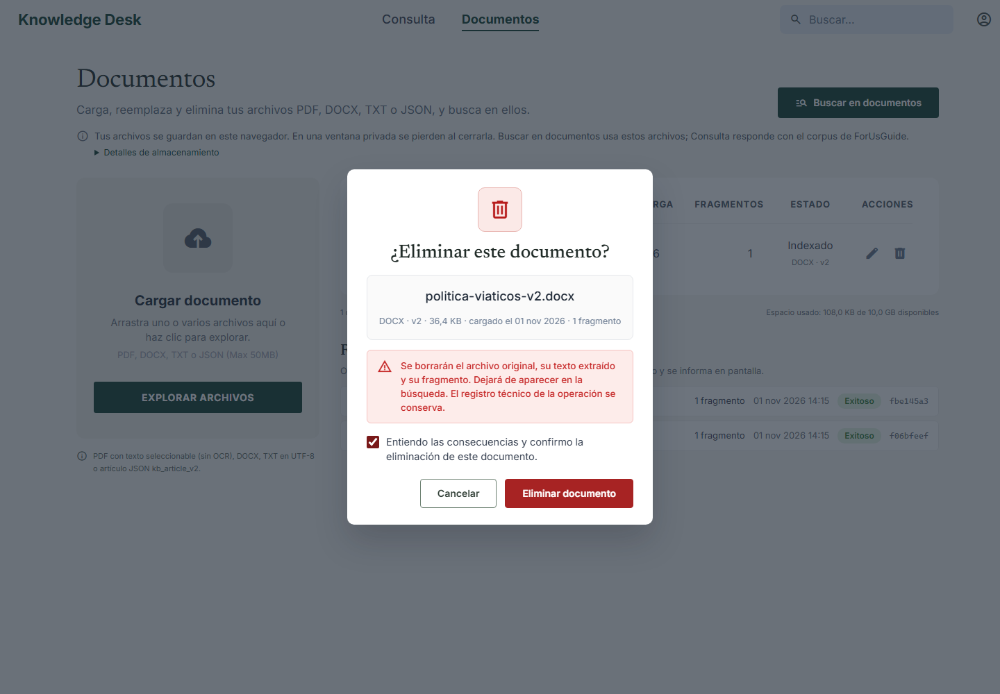
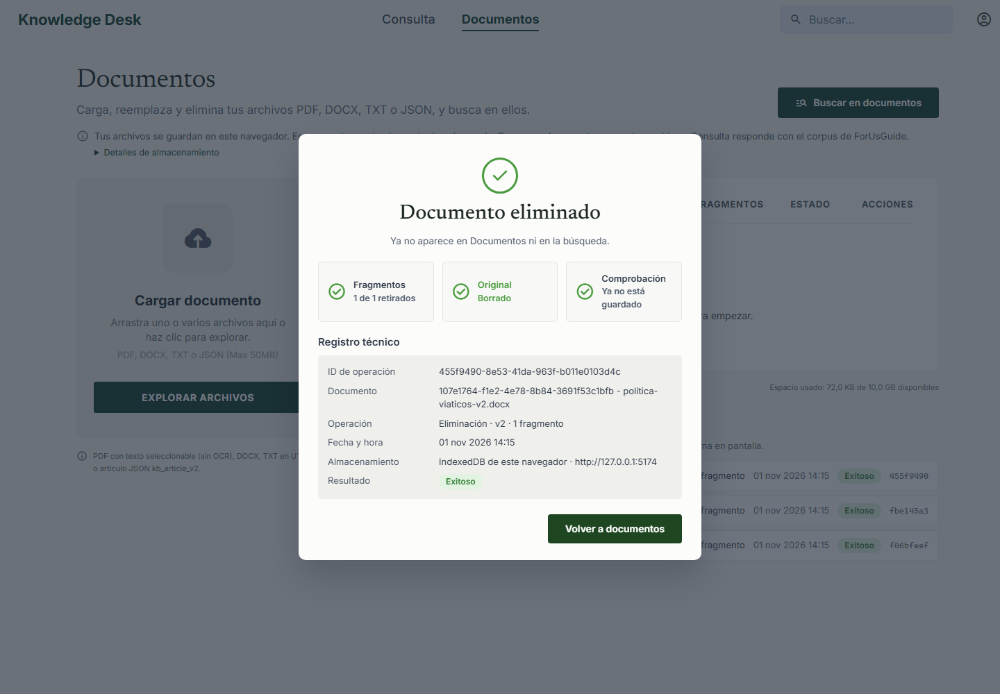
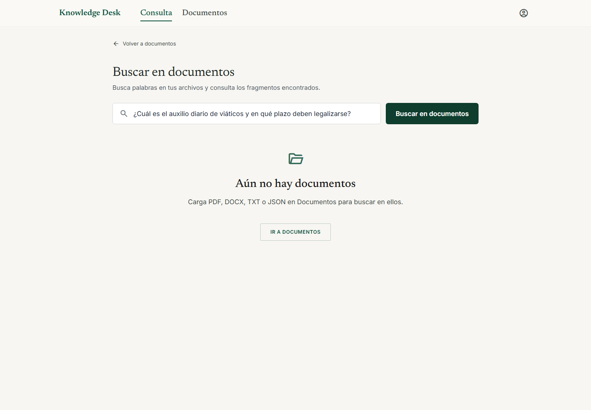

1. Documento cargado y conservado tras recargar
El PDF aparece en la lista con su fecha, fragmentos y acciones.

2. Texto extraído y archivo original
La versión inicial contiene un auxilio diario de 120000 COP. El visor ofrece la descarga de los bytes originales y verifica su integridad.

3. Confirmación del reemplazo
Se identifica el documento vigente y se selecciona el archivo aprobado de la versión nueva.

4. Documento reemplazado
El reemplazo conserva el identificador, publica la versión nueva y registra la operación.

5. La búsqueda usa solo el contenido nuevo
El extracto corresponde al DOCX de la versión 2: 180000 COP y 3 días hábiles. El monto anterior deja de aparecer.

6. Error de reemplazo y conservación de la versión vigente
Se inyecta un error de cuota en las transacciones de escritura. La aplicación muestra el motivo, conserva la versión 2 y permite reintentar.

7. Vista en móvil
La lista se adapta a una pantalla de 375 píxeles de ancho.

8. Confirmación de eliminación
Se identifica el documento y se requiere confirmación explícita antes de borrar.

9. Documento eliminado
El archivo y sus fragmentos se retiran en una transacción; el registro técnico permanece disponible.

10. La búsqueda ya no encuentra el documento eliminado
Después de eliminarlo no quedan extractos ni enlaces a ese documento en los resultados.
